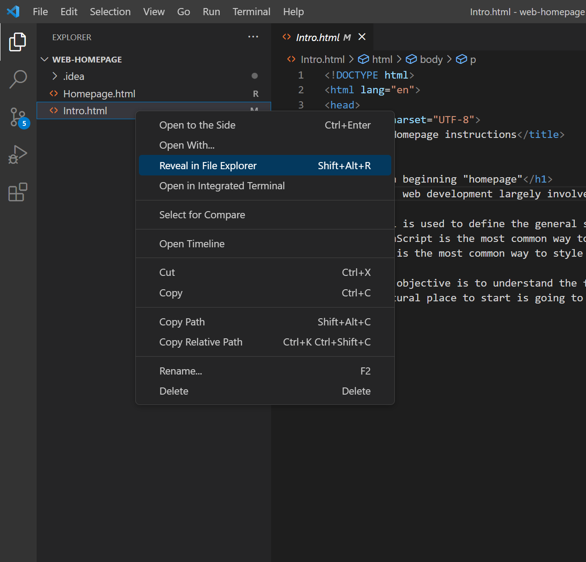
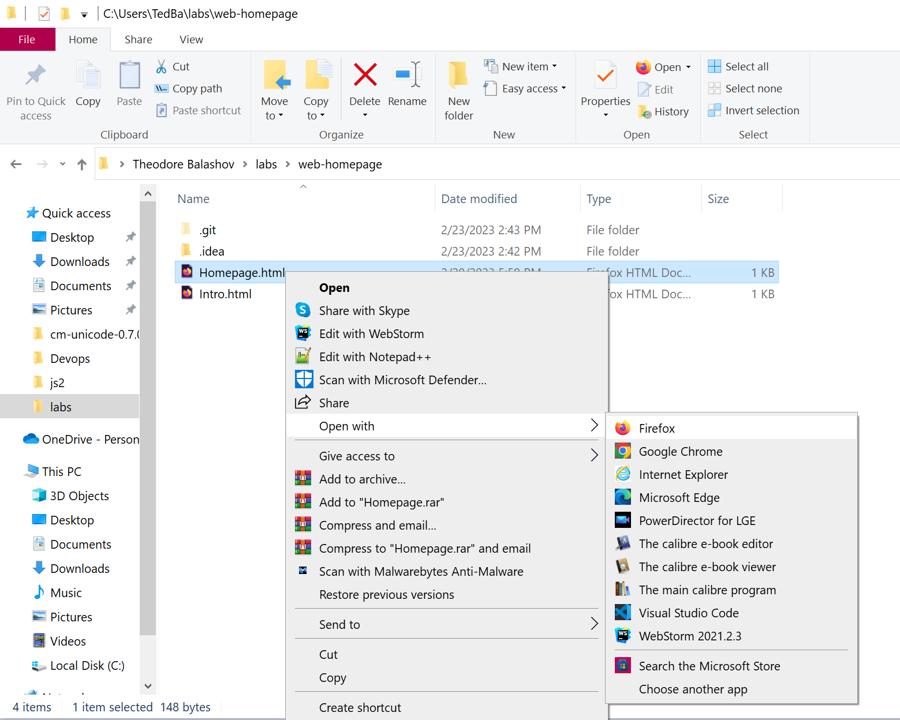

Making a beginning "homepage"
To start, web development largely involves the creation and modifications of elements of a web site.
- HTML is necessary for defining the general structure of a site.
- JavaScript is the most common way to introduce interactivity & general programming capability to websites.
- CSS is the most common way to style websites and to introduce user-friendliness across any type of device.
While it is useful, styling will be considered generally ancillary to our goals in web development and will
be mostly ignored.
Our real objective is to understand the flow of web development enough to prepare you to work with advanced
JavaScript frameworks. The most natural place to start is going to be to write some of your own elements: check
out YourHomepage.html, create the elements defined there, and open the html files in your web browser to see
your progress.


click here to proceed to your "homepage" in the browser!